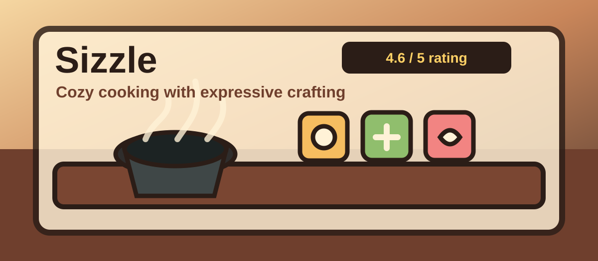

Build from the base
Noodles, plates, and bowls usually need to come before toppings or sauce.
Sizzle
Sizzle is a chill cooking prototype where you experiment with ingredients, tools, and customer orders.
Play Sizzle
Basics
Cooking
Noodles, plates, and bowls usually need to come before toppings or sauce.
If a combo does not work, try chopping or cooking the ingredient first.
Pay attention when customers speak because the prototype can be light on reminders.